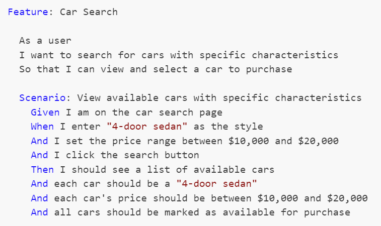

When VS Code Shows the Wrong Source Control View - Resolving Duplicate Icons
Posted by bsstahl on 2025-04-13 and Filed Under: development
Recently, I encountered a confusing issue with Visual Studio Code where the source control tab wasn't showing my modified files anymore. Git was correctly detecting changes since the git status command correctly showed modifications, but those changes weren't appearing in VS Code's source control panel. Instead, I was seeing a graph view of my repository history.
The Investigation
I turned to Claude Sonnet 3.7 (via the Cline extension in VS Code) for help troubleshooting this issue. We started with some basic diagnostics:
- First, we verified Git was working correctly by viewing modified fiels in the terminal using git status
- We checked VS Code's Git extensions and settings to see if anything was misconfigured
- Claude suggested trying the Ctrl+Shift+G keyboard shortcut, which immediately showed the correct view with my modified files
This last step was the key insight - pressing Ctrl+Shift+G showed the standard Source Control view with a list of modified files (what I wanted), but clicking the Source Control icon in the Activity Bar showed a different view (the graph view).
The Solution
After some investigation, we discovered the root cause: I had two different source control icons in my Activity Bar:
- One at the top labeled "Source Control" that showed the graph view
- One at the bottom (off-screen, requiring scrolling) labeled "Source Control (Ctrl-Shift-G)" that showed the view of changed files
The solution was simple:
- Remove the unwanted icon (the top one showing the graph view)
- Move the correct icon ("Source Control (Ctrl-Shift-G)") to a more visible position in the Activity Bar
After making these changes, clicking the Source Control icon in the Activity Bar now consistently shows my modified files, just like pressing Ctrl+Shift+G.
Why This Happens
VS Code allows multiple views with similar icons to coexist in the Activity Bar. This flexibility is powerful but can sometimes lead to confusion:
- Extensions can add their own source control-related views
- These views might use similar terminology and iconography
- Without careful attention to the hover labels, it's easy to confuse which icon does what
In my case, I had somehow ended up with duplicate Source Control icons in my Activity Bar, each showing different views of my repository.
Preventing Future Issues
To avoid similar confusion in the future, I will make sure that I:
- Hover over icons in the Activity Bar to see their full labels
- Pay attention to keyboard shortcuts listed in the labels (like "Ctrl-Shift-G")
- Right-click on the Activity Bar and review which views are enabled
- Remove the ones I use less frequently when I end up with multiple, similar icons.
Tags: vscode git source-control troubleshooting ui
Preserve Section 230 to Protect Free Speech and Competition
Posted by bsstahl on 2025-03-26 and Filed Under: general
An open letter to Senators Kelly and Gallego urging them to oppose any weakening of the protections found in Section 230 of the Communications Decency Act (CDA) of 1996.
Dear Senator,
I am reaching out to express my strong opposition to any modifications or repeal of Section 230 of the Communications Decency Act.
I am a constituent and a professional with 40 years of experience in distributed systems development, including my work on some of the earliest Internet-based applications at Intel Corporation in Chandler.
Section 230 is a foundational element of the Internet's legal framework and altering it could have profound negative impacts on both free speech and competition in the Internet services space. Here are my primary concerns:
Impact on Free Speech
Section 230 provides a crucial liability shield that enables platforms to host diverse content without fear of constant litigation. Repealing or modifying this section would lead to increased censorship as platforms become overly cautious in moderating content. This could stifle free expression and create a chilling effect, where administrators are forced to censor, or shut down operations altogether, out of fear that perfectly legal speech might lead to liabilities for the platform. The open dialogue and exchange of ideas that are core to our democratic principles would be severely compromised.
In addition, modifying or even eliminating Section 230 wouldn't stop bad actors from spreading harmful content, as they are adept at exploiting loopholes and adapting to new platforms. A much better approach lies in addressing the behavior of the bad actors themselves, not transferring the responsibility onto Internet platform administrators. The issues that people seek to solve by modifying Section 230 simply would not be improved by this legislation.
Impact on Competition
The current protections encourage innovation and allow new entrants to compete in the Internet services space. Without these protections, smaller companies and startups would face significant barriers to entry due to the threat of costly litigation and the need to support large staff of content moderators. This could lead to an even greater consolidation of power among a few large corporations, reducing competition and limiting consumer choice. Furthermore, these same increased operational costs could stifle innovation and slow the development of new technologies.
As someone who has been deeply involved in the growth and evolution of Internet technologies, I believe that maintaining the integrity of Section 230 is essential for fostering a vibrant, competitive, and open Internet. I urge you to consider the potential ramifications of modifying this critical piece of legislation and to oppose any efforts that would undermine its foundational principles.
Thank you for your attention to this important matter. I appreciate your service to our state and your consideration of my perspective. Please feel free to contact me if you wish to discuss this issue further.
Sincerely,
Barry Stahl
Software Engineer
Phoenix AZ
https://CognitiveInheritance.com
Tags: legislation net-neutrality ethics opinion social-media
Understanding the ID Entanglement Effect
Posted by bsstahl on 2025-02-01 and Filed Under: development
Every developer has faced it: the temptation to make identifiers "smarter" by embedding information. A customer ID that includes their region, an order number containing the date, a product code that encodes its category - these patterns appear innocent at first, even helpful. But they hide a subtle trap I call the "ID Entanglement Effect" - a cascade of complexity that emerges when identifiers become intertwined with business logic and mutable state.
This effect manifests when we blur the line between identification and information, creating a web of dependencies that grows increasingly difficult to maintain. What starts as a convenient shortcut often evolves into a significant source of technical debt, affecting everything from system flexibility to data integrity.
Critical Characteristics
Structural Dependency
Systems relying on a specific format for composite IDs become fragile. Any format change can disrupt functionality and complicate maintenance. For instance, if a system uses "DEPT-EMP-123" as an employee ID, changing the department code structure creates a difficult choice: either update all systems and databases that use this format (a risky and potentially expensive undertaking), or abandon the standard for new records while keeping old IDs in the legacy format. The latter option results in inconsistent IDs across the system where some follow the old standard and others follow the new one, effectively creating a partial, incomplete, and incorrect standard within the IDs themselves. This inconsistency further complicates maintenance and can lead to confusion and errors in data processing.
Data Parsing
When information is embedded in composite IDs, parsing them often appears to be the simplest solution - and it's a completely understandable choice when the data is readily available in the ID itself. Consider an order ID like "2024-01-NA-12345" containing year, region, and sequence number information. Using this embedded data seems more straightforward than querying additional fields or services. However, this parsing must be replicated across different applications and languages, increasing the risk of inconsistencies and errors. The only way to be sure we don't end up parsing these IDs, and in doing so bringing the ID Entanglement Effect into play, is to avoid creating systems that embed business data in identifiers in the first place.
Maintenance Complexity
Parsing logic embedded throughout the codebase increases complexity, making debugging and future development challenging. For example, if an order ID contains both a date and location code (like "20240129-PHX-1234"), every service that processes orders must implement and maintain the same parsing logic. When this logic needs to change, such as adding a new location format, developers must update and test the parsing code across multiple codebases, increasing the risk of inconsistencies.
Inflexibility
Composite IDs limit adaptability. Modifications can ripple through the system, complicating changes or scaling. For example, if a product ID includes a category code (like "TECH-LAPTOP-123"), adding new product categories or reorganizing the category hierarchy becomes a major undertaking. Similarly, if a customer ID includes a region code ("US-WEST-789"), business expansion to new regions or changes in regional organization can require extensive system updates.
Data Integrity Risks
Parsing composite IDs can lead to inconsistencies, especially in dynamic environments. Consider a system where we create product IDs by combining our supplier code with a sequence number (like "SUP123-WIDGET-456"). If the supplier's business is acquired and rebranded, or if the product's manufacturing moves to a different supplier, should all related IDs be updated? This creates significant challenges: either maintain increasingly inaccurate IDs, implement complex ID migration processes, or risk breaking existing references across the system.
Note that using a manufacturer's actual part number (like "ACME-WIDGET-123") as an opaque identifier is perfectly fine - the key is that we treat it as an unchanging reference and don't try to parse meaning from its structure. The ID Entanglement Effect occurs when we create our own composite IDs that encode business relationships or mutable state that we expect to parse and interpret later.
Security Vulnerabilities
Auto-incrementing integers, while simple, introduce significant security risks. Their predictable nature makes it easy for attackers to enumerate resources (like guessing user IDs to access profiles) or gather business intelligence (such as order volumes from sequential order numbers). They can also lead to race conditions in high-concurrency systems and make it difficult to merge data from different sources without ID conflicts.
Long-Term Impact
The ID Entanglement Effect compounds over time, creating increasingly complex challenges:
- Technical Debt: As systems evolve, the cost of maintaining and updating composite ID logic grows exponentially
- Integration Barriers: New systems and third-party integrations must implement complex parsing logic
- Performance Overhead: Constant parsing and validation of composite IDs impacts system performance
- Error Propagation: Mistakes in ID parsing can cascade through multiple systems
- Documentation Burden: Teams must maintain detailed documentation about ID formats and parsing rules
Prevention Strategies
To avoid the ID Entanglement Effect, consider these key strategies:
Use Clean, Stable Identifiers
- Treat all identifiers, especially those from external systems, as opaque strings whose sole purpose is to establish equivalence through exact matching. This is crucial because:
- It prevents accidental coupling to internal structures or business logic that may be embedded in the ID
- It ensures the system remains resilient to changes in ID format or structure
- It maintains compatibility with different ID generation schemes across systems
- It avoids assumptions about ID content that could break when integrating with new systems
- Generate unique identifiers that remain consistent over time
- Human-readable identifiers (like "ORDER-12345") are perfectly acceptable
- Avoid encoding mutable data or business logic in the identifier
- Use non-sequential identifiers (like UUIDs) to prevent enumeration attacks
- Consider the security implications of identifier patterns
Maintain Clear Boundaries
- Store business data in proper fields, not in the identifier
- Keep temporal data (dates, versions) in dedicated attributes
- Track status and metadata independently of the ID
Design for Change
- Assume business rules and categories will evolve
- Plan for system growth and new use cases
- Consider future integration requirements
Best Practices
When designing identifier systems:
- Keep IDs Clean: Use straightforward identifiers that don't encode mutable data
- Separate Concerns: Store business data, status, and metadata in dedicated fields
- Plan for Scale: Choose identifier formats that support future growth
- Consider Relations: Use proper database relationships instead of encoding hierarchies in IDs
- Document Clearly: Maintain clear documentation about identifier generation and usage
Conclusion
The ID Entanglement Effect represents a significant challenge in system design, where the convenience of composite IDs leads to long-term maintenance and scalability issues. By understanding these risks and following best practices for identifier design, teams can create more maintainable and adaptable systems. Remember: while identifiers can be human-readable, they should never become entangled with business logic or mutable state - this separation is key to maintaining system flexibility and reliability over time.
Tags: antipattern architecture coding-practices coupling flexibility
Code Coverage - The Essential Tool That Must Never Be Measured
Posted by bsstahl on 2024-09-14 and Filed Under: development
TLDR: Code Coverage is the Wrong Target
Code coverage metrics HURT code quality, especially when gating deployments, because they are a misleading target, prioritizing superficial benchmarks over meaningful use-case validation. A focus on achieving coverage percentages detracts from real quality assurance, as developers write tests that do what the targets insist that they do, satisfy coverage metrics rather than ensuring comprehensive use-case functionality.
When we measure code coverage instead of use-case coverage, we limit the value of the Code Coverage tools for the developer going forward as a means of identifying areas of concern within the code. If instead we implement the means to measure use-case coverage, perhaps using Cucumber/SpecFlow BDD tools, such metrics might become a valuable target for automation. Short of that, test coverage metrics and gates actually hurt quality rather than helping it.
- Do Not use code coverage as a metric, especially as a gate for software deployment.
- Do use BDD style tests to determine and measure the quality of software.
What is Code Coverage?
Code coverage measures the extent to which the source code of a program has been executed during the testing process. It is a valuable tool for developers to identify gaps in unit tests and ensure that their code is thoroughly tested. An example of the output of the Code Coverage tools in Visual Studio Enterprise from my 2015 article Remove Any Code Your Users Don't Care About can be seen below. In this example, the code path where the property setter was called with the same value the property already held, was not tested, as indicated by the red highlighting, while all other blocks in this code snippet were exercised by the tests as seen by the blue highlighting.

When utilized during the development process, Code Coverage tools can:
Identify areas of the codebase that haven't been tested, allowing developers to write additional tests to ensure all parts of the application function as expected.
Improve understanding of the tests by identifying what code is run during which tests.
Identify areas of misunderstanding, where the code is not behaving as expected, by visually exposing what code is executed during testing.
Focus testing efforts on critical or complex code paths that are missing coverage, ensuring that crucial parts of the application are robustly tested.
Identify extraneous code that is not executed during testing, allowing developers to remove unnecessary code and improve the maintainability of the application.
Maximize the value of Test-Driven Development (TDD) by providing immediate feedback on the quality of tests, including the ability for a developer to quickly see when they have skipped ahead in the process by creating untested paths.
All of these serve to increase trust in our unit tests, allowing the developers the confidence to "refactor ruthlessly" when necessary to improve the maintainability and reliability of our applications. However, they also depend on one critical factor, that when an area shows in the tooling as covered, the tests that cover it do a good job of guaranteeing that the needs of the users are met by that code. An area of code that is covered, but where the tests do not implement the use-cases that are important to the users, is not well-tested code. Unfortunately, this is exactly what happens when we use code coverage as a metric.
The Pitfalls of Coverage as a Metric
A common misunderstanding in our industry is that higher code coverage equates to greater software quality. This belief can lead to the idea of using code coverage as a metric in attempts to improve quality. Unfortunately, this well-intentioned miscalculation generally has the opposite effect, a reduction in code quality and test confidence.
Goodhart's Law
Goodhart's Law states that "When a measure becomes a target, it ceases to be a good measure." We have seen this principle play out in many areas of society, including education (teaching to the test), healthcare (focus on throughput rather than patient outcomes), and social media (engagement over truth).
This principle is particularly relevant when it comes to code coverage metrics. When code coverage is used as a metric, developers will do as the metrics demand and produce high coverage numbers. Usually this means writing one high-quality test for the "happy path" in each area of the code, since this creates the highest percentage of coverage in the shortest amount of time. It should be clear that these are often good, valuable tests, but they are not nearly the only tests that need to be written.
Problems as outlined in Goodhart's Law occur because a metric is nearly always a proxy for the real goal. In the case of code coverage, the goal is to ensure that the software behaves as expected in all use-cases. The metric, however, is a measure of how many lines of code have been executed by the tests. This is unfortunately NOT a good proxy for the real goal, and is not likely to help our quality, especially in the long-run. Attempting to use Code Coverage in this way is akin to measuring developer productivity based on the number of lines of code they create -- it is simply a bad metric.
A Better Metric
If we want to determine the quality of our tests, we need to measure the coverage of our use-cases, not our code. This is more difficult to measure than code coverage, but it is a much better proxy for the real goal of testing. If we can measure how well our code satisfies the needs of the users, we can be much more confident that our tests are doing what they are supposed to do -- ensuring that the software behaves as expected in all cases.
The best tools we have today to measure use-case coverage are Behavior Driven Development tools like Cucumber, for which the .NET implementation is called SpecFlow. These tools test how well our software meets the user's needs by helping us create test that focus on how the users will utilize our software. This is a much better proxy for the real goal of testing, and is much more likely to help us achieve our quality goals.
The formal language used to describe these use-cases is called Gherkin, and uses a Given-When-Then construction. An example of one such use-case test for a simple car search scenario might look like this:

These Gherkin scenarios, often created by analysts, are translated into executable tests using step definitions. Each Gherkin step (Given, When, Then) corresponds to a method in a step definition file created by a developer, where annotations or attributes bind these steps to the code that performs the actions or checks described. This setup allows the BDD tool to execute the methods during test runs, directly interacting with the application and ensuring that its behavior aligns with defined requirements.
Since these tests exercise the areas of the code that are important to the users, coverage metrics here are a much better proxy for the real goal of testing, because they are testing the use-cases that are important to the users. If an area of code is untested by BDD style tests, that code is either unnecessary or we are missing use-cases in our tests.
Empowering Developers: Code Coverage Tools, Visualization, and Use Case Coverage
One of the most powerful aspects of code coverage tools are their data visualizations, allowing developers to assess which lines of code have been tested and which have not, right inside the code in the development environment. This visualization transcends the mere percentage or number of lines covered, adding significant value to the development process and enabling developers to make informed decisions about where to focus their testing efforts.
By permitting developers to utilize code coverage tools and visualization without turning them into a metric, we can foster enhanced software quality and more comprehensive testing. By granting developers the freedom to use these tools and visualize their code coverage, they can better identify gaps in their testing and concentrate on covering the most critical use cases. If instead of worrying about how many lines of code are covered, we focus on what use-cases are covered, we create better software by ensuring that the most important aspects of the application are thoroughly tested and reliable.
Creating an Environment that Supports Quality Development Practices
Good unit tests that accurately expose failures in our code are critical for the long-term success of development teams. As a result, it is often tempting to jump on metrics like code coverage to encourage developers to "do the right thing" when building software. Unfortunately, this seemingly simple solution is almost always the wrong approach.
Encourage Good Testing Practices without Using Code Coverage Metrics
So how do we go about encouraging developers to build unit tests that are valuable and reliable without using code coverage metrics? The answer is that we don't. A culture of quality development practices is built on trust, not metrics. We must trust our developers to do the right thing, and create an environment where they are empowered to do the job well rather than one that forces them to write tests to satisfy a metric.
Developers want to excel at their jobs, and never want to create bugs. No matter how much of a "no blame" culture we have, or how much we encourage them to "move fast and break things", developers will always take pride in their work and want to create quality software. Good tests that exercise the code in ways that are important to the users are a critical part of that culture of quality that we all want. We don't need to force developers to write these tests, we just need to give them the tools and the environment in which to do so.
There are a number of ways we can identify when this culture is not yet in place. Be on the lookout for any of these signs:
- Areas of code where, every time something needs to change, the developers first feel it necessary to write a few dozen tests so that they have the confidence to make the change, or where changes take longer and are more error-prone because developers can't be confident in the code they are modifying.
- Frequent bugs or failures in areas of the code that represent key user scenarios. This suggests that tests may have been written to create code coverage rather than to exercise the important use-cases.
- A developer whose code nobody else wants to touch because it rarely has tests that adequately exercise the important features.
- Regression failures where previous bugs are reintroduced, or exposed in new ways, because the early failures were not first covered by unit tests before fixing them.
The vast majority of developers want to do their work in an environment where they don't have to worry when asked to making changes to their teammates' code because they know it is well tested. They also don't want to put their teammates in situations where they are likely to fail because they had to make a change when they didn't have the confidence to do so, or where that confidence was misplaced. Nobody wants to let a good team down. It is up to us to create an environment where that is possible.
Conclusion: Code Coverage is a Developer's Tool, Not a Metric
Code coverage is an invaluable tool for developers, but it should not be misused as a superficial metric. By shifting our focus from the number of code blocks covered to empowering developers with the right tools and environment, we can ensure software quality through proper use-case coverage. We must allow developers to utilize these valuable tools, without diluting their value by using them as metrics.
Tags: development testing principle code-coverage
Objects with the Same Name in Different Bounded Contexts
Posted by bsstahl on 2023-10-29 and Filed Under: development
Imagine you're working with a Flight entity within an airline management system. This object exists in at least two (probably more) distinct execution spaces or 'bounded contexts': the 'passenger pre-purchase' context, handled by the sales service, and the 'gate agent' context, managed by the Gate service.
In the 'passenger pre-purchase' context, the 'Flight' object might encapsulate attributes like ticket price and seat availability and have behaviors such as 'purchase'. In contrast, the 'gate agent' context might focus on details like gate number and boarding status, and have behaviors like 'check-in crew member' and 'check-in passenger'.
Some questions often arise in this situation: Should we create a special translation between the flight entities in these two contexts? Should we include the 'Flight' object in a Shared Kernel to avoid duplication, adhering to the DRY (Don't Repeat Yourself) principle?
My default stance is to treat objects with the same name in different bounded contexts as distinct entities. I advocate for each context to have the autonomy to define and operate on its own objects, without the need for translation or linking. This approach aligns with the principle of low coupling, which suggests that components should be as independent as possible.

In the simplified example shown in the graphic, both the Sales and Gate services need to know when a new flight is created so they can start capturing relevant information about that flight. There is nothing special about the relationship however. The fact that the object has the same name, and in some ways represents an equivalent concept, is immaterial to those subsystems. The domain events are captured and acted on in the same way as they would be if the object did not have the same name.
You can think about it as analogous to a relational database where there are two tables that have columns with the same names. The two columns may represent the same or similar concepts, but unless there are referential integrity rules in place to force them to be the same value, they are actually distinct and should be treated as such.
I do recognize that there are likely to be situations where a Shared Kernel can be beneficial. If the 'Flight' object has common attributes and behaviors that are stable and unlikely to change, including it in the Shared Kernel could reduce duplication without increasing coupling to an unnaceptable degree, especially if there is only a single team developing and maintaining both contexts. I have found however, that this is rarely the case, especially since, in many large and/or growing organizations, team construction and application ownership can easily change. Managing shared entities across multiple teams usually ends up with one of the teams having to wait for the other, hurting agility. I have found it very rare in my experience that the added complexity of an object in the Shared Kernel is worth the little bit of duplicated code that is removed, when that object is not viewed identically across the entire domain.
Ultimately, the decision to link objects across bounded contexts or include them in a Shared Kernel should be based on a deep understanding of the domain and the specific requirements and constraints of the project. If it isn't clear that an entity is seen identically across the entirety of a domain, distinct views of that object should be represented separately inside their appropriate bounded contexts. If you are struggling with this type of question, I reccommend Event Storming to help gain the needed understanding of the domain.
Tags: development principle ddd
The Depth of GPT Embeddings
Posted by bsstahl on 2023-10-03 and Filed Under: tools
I've been trying to get a handle on the number of representations possible in a GPT vector and thought others might find this interesting as well. For the purposes of this discussion, a GPT vector is a 1536 dimensional structure that is unit-length, encoded using the text-embedding-ada-002 embedding model.
We know that the number of theoretical representations is infinite, being that there are an infinite number of possible values between 0 and 1, and thus an infinite number of values between -1 and +1. However, we are not working with truly infinite values since we need to be able to represent them in a computer. This means that we are limited to a finite number of decimal places. Thus, we may be able to get an approximation for the number of possible values by looking at the number of decimal places we can represent.
Calculating the number of possible states
I started by looking for a lower-bound for the value, and incresing fidelity from there. We know that these embeddings, because they are unit-length, can take values from -1 to +1 in each dimension. If we assume temporarily that only integer values are used, we can say there are only 3 possible states for each of the 1536 dimensions of the vector (-1, 0 +1). A base (B) of 3, with a digit count (D) of 1536, which can by supplied to the general equation for the number of possible values that can be represented:
V = BD or V = 31536
The result of this calculation is equivalent to 22435 or 10733 or, if you prefer, a number of this form:
10000000000000000000000000000000000000000000000000000000000000000000000000000000000000000000000000000000000000000000000000000000000000000000000000000000000000000000000000000000000000000000000000000000000000000000000000000000000000000000000000000000000000000000000000000000000000000000000000000000000000000000000000000000000000000000000000000000000000000000000000000000000000000000000000000000000000000000000000000000000000000000000000000000000000000000000000000000000000000000000000000000000000000000000000000000000000000000000000000000000000000000000000000000000000000000000000000000000000000000000000000000000000000000000000000000000000000000000000000000000000000000000000000000000000000000000000000000000000000000000000000000000000
Already an insanely large number. For comparison, the number of atoms in the universe is roughly 1080.
We now know that we have at least 10733 possible states for each vector. But that is just using integer values. What happens if we start increasing the fidelity of our value. The next step is to assume that we can use values with a single decimal place. That is, the numbers in each dimension can take values such as 0.1 and -0.5. This increases the base in the above equation by a factor of 10, from 3 to 30. Our new values to plug in to the equation are:
V = 301536
Which is equivalent to 27537 or 102269.
Another way of thinking about these values is that they require a data structure not of 32 or 64 bits to represent, but of 7537 bits. That is, we would need a data structure that is 7537 bits long to represent all of the possible values of a vector that uses just one decimal place.
We can continue this process for a few more decimal places, each time increasing the base by a factor of 10. The results can be found in the table below.
| B | Example | Base-2 | Base-10 |
|---|---|---|---|
| 3 | 1 | 2435 | 733 |
| 30 | 0.1 | 7537 | 2269 |
| 300 | 0.01 | 12639 | 3805 |
| 3000 | 0.001 | 17742 | 5341 |
| 30000 | 0.0001 | 22844 | 6877 |
| 300000 | 0.00001 | 27947 | 8413 |
| 3000000 | 0.000001 | 33049 | 9949 |
| 30000000 | 0.0000001 | 38152 | 11485 |
| 300000000 | 0.00000001 | 43254 | 13021 |
| 3000000000 | 0.000000001 | 48357 | 14557 |
| 30000000000 | 1E-10 | 53459 | 16093 |
| 3E+11 | 1E-11 | 58562 | 17629 |
This means that if we assume 7 decimal digits of precision in our data structures, we can represent 1011485 distinct values in our vector.
This number is so large that all the computers in the world, churning out millions of values per second for the entire history (start to finish) of the universe, would not even come close to being able to generate all of the possible values of a single vector.
What does all this mean?
Since we currently have no way of knowing how dense the representation of data inside the GPT models is, we can only guess at how many of these possible values actually represent ideas. However, this analysis gives us a reasonable proxy for how many the model can hold. If there is even a small fraction of this information encoded in these models, then it is nearly guaranteed that these models hold in them insights that have never before been identified by humans. We just need to figure out how to access these revelations.
That is a discussion for another day.
Tags: ai embedding
Feature Flags: Don't Roll Your Own
Posted by bsstahl on 2023-08-14 and Filed Under: development
In my previous post, I discussed situations where we tend to overvalue visible costs and undervalue more hidden costs. One example of this dynamic is the tendency to want to roll-your-own feature-flagging system.
Feature flags are a powerful tool for controlling the availability and behavior of features in your software. They allow you to turn features on or off at runtime, without deploying new code, and target specific segments of users with different variations of your features. This enables you to experiment, test, and release features faster and safer than ever before.
But feature flags are not something you should implement yourself. Rolling your own feature flags may seem like a simple and cost-effective solution, but it comes with many hidden pitfalls and risks that can undermine your software quality, performance, security, and maintainability. Ultimately, rolling your own feature flag system may end up costing you much more than using an existing product.
We should always have a strong bias against building anything that falls outside of our team's core competencies, but feature flags in particular have their own special set of concerns, especially since, on the surface, it seems like such a simple problem.
Here are some of the specific reasons why you should avoid rolling your own feature flags:
Complexity: Implementing feature flags requires more than just adding some if statements to your code. You need to design a robust system for managing, storing, updating, evaluating, and auditing your feature flags across different environments, platforms, services, and teams. You also need to handle edge cases such as flag dependencies, conflicts, defaults, fallbacks, rollbacks, etc. This adds a lot of complexity and overhead to your codebase that can introduce bugs, errors, inconsistencies, and technical debt.
Performance: Evaluating feature flags at runtime can have a significant impact on your application's performance if not done properly. You need to ensure that your feature flag system is fast, scalable, reliable, resilient, and secure. You also need to optimize your flag evaluation logic for minimal latency and resource consumption. If you roll your own feature flags without proper performance testing and monitoring tools, you may end up slowing down or crashing your application due to excessive network calls, database queries, memory usage, or CPU cycles.
Security: Feature flags can expose sensitive information or functionality that should not be accessible by unauthorized users or attackers. You need to ensure that your feature flag system is secure from both internal and external threats. You also need to comply with any regulatory or legal requirements for data privacy and protection. If you roll your own feature flags without proper security measures and best practices, you may end up leaking confidential data or compromising your application's integrity.
Maintainability: Feature flags are meant to be temporary switches that enable or disable features until they are ready for full release or removal. However, if you roll your own feature flags without proper management tools and processes, you may end up with a large number of stale or unused flags that clutter or pollute your codebase. This makes it harder to understand or modify your code, increases the risk of errors or conflicts, and reduces the readability or testability of your code.
As you can see, rolling your own feature flags is not as easy as it sounds. It requires a lot of time, effort, skill, and discipline to do it well. And even if you manage that nebulous challenge at rollout, you still have to maintain and extend the system for the life of the products that use it.
That's why you should use a feature flag management platform instead. A feature flag management platform provides you with all the tools and services you need to implement and manage feature flags effectively and efficiently.
With a feature flag management platform:
You can create and update feature flags easily using a user-friendly interface or API.
You can target specific segments of users based on various criteria such as location, device type, user behavior, etc.
You can monitor and measure the impact of your features on key metrics such as conversion rates, engagement levels, error rates, etc.
You can control the rollout speed and strategy of your features using various methods such as percentage-based splits, canary releases, blue-green deployments, etc.
You can integrate with various tools such as CI/CD pipelines, testing frameworks, analytics platforms, etc. to streamline your development and delivery workflows.
You can ensure the performance, security, reliability, scalability, of your feature flag system using advanced techniques such as caching, encryption, failover mechanisms, load balancing, etc.
You can manage the lifecycle of your feature flags using best practices such as naming conventions, documentation, flag retirement policies, etc.
A feature flag management platform takes care of all these aspects for you, so you can focus on building and delivering great features for your customers.
There are many feature flag management platforms available in the market, such as LaunchDarkly, Split, Optimizely, Taplytics, etc. Each platform has its own features, pricing, and integrations that you can compare and choose from based on your needs and preferences.
However, regardless of which platform you use, there are some best practices that you should follow when using feature flags. These best practices will help you avoid common pitfalls and maximize the benefits of feature flags for your software development and delivery process.
Here are some of the best practices that you should know:
Use a consistent system for feature flag management: It doesn't matter if you use a feature flag management tool or a custom solution, as long as you have a consistent system for creating, updating, and deleting your feature flags. You should also have a clear ownership and accountability model for each flag, so that you know who is responsible for what.
Set naming conventions for different types of feature flags: You can implement feature flags to achieve many different goals, such as testing, experimenting, releasing, or hiding features. You should use descriptive and meaningful names for your flags that indicate their purpose and scope. You should also use prefixes or suffixes to distinguish between different types of flags, such as release flags, experiment flags, kill switches, etc.
Make it easy to switch a flag on/off: You should be able to turn a feature flag on or off with minimal effort and delay. You should also be able to override or modify a flag's settings at any time without redeploying your code. This will allow you to react quickly and flexibly to any changes or issues that may arise during your feature development or delivery cycle.
Make feature flag settings visible: You should be able to see and monitor the current state and configuration of each feature flag at any given time. You should also be able to track and audit the history and usage of each flag across different environments, platforms, services, and teams. This will help you ensure transparency and traceability of your feature development and delivery process.
Clean up obsolete flags: You should remove any feature flags that are no longer needed or used as soon as possible. This will prevent cluttering or polluting your codebase with unnecessary or outdated code paths that can increase complexity or introduce errors or conflicts.
Some additional recommendations are:
Avoid dependencies between flags: You should avoid creating complex dependencies or interactions between different feature flags that can make it hard to understand or predict their behavior or impact. You should also avoid nesting or chaining multiple flags within each other that can increase latency or resource consumption.
Use feature switches to avoid code branches: You should use simple boolean expressions to evaluate your feature flags rather than creating multiple code branches with if/else statements. This will reduce code duplication and improve readability and testability of your code.
Use feature flags for small test releases: You should use feature flags to release small batches of features incrementally rather than releasing large groups of features altogether. This will allow you to test and validate your features with real users in production without affecting everyone at once. It will also enable you to roll back or fix any issues quickly if something goes wrong.
By following these best practices, you can leverage the power of feature flags without compromising on quality, performance, security, or maintainability.
Some Open Source Feature Flag Systems
Yes, there are some open source projects that support feature flag management. For example:
GrowthBook: GrowthBook is an open source feature management and experimentation platform that helps your engineering team adopt an experimentation culture. It enables you to create gradual or canary releases with user targeting, run A/B tests, track key metrics, and integrate with various data sources.
Flagsmith: Flagsmith is an open source feature flag and remote config service that makes it easy to create and manage features flags across web, mobile, and server side applications. It allows you to control feature access, segment users, toggle features on/off, and customize your app behavior without redeploying your code.
Unleash: Unleash is an open source feature flag management system that helps you deploy new features at high speed. It lets you decouple deployment from release, run experiments easily, scale as your business grows, and integrate with various tools and platforms.
These are just some examples of open source feature flag management projects. There may be others that suit your needs better.
Feature flags are an essential tool for modern software development and delivery. They enable you to deliver faster, safer, and better features for your customers while reducing risk and cost. But don't try to roll your own feature flags unless you have a good reason and enough resources to do so. Instead, use a professional feature flag management platform that provides you with all the tools and services you need to implement and manage feature flags effectively and efficiently.
Disclaimer: My teams use LaunchDarkly for feature-flagging but I am not affiliated with that product or company in any way. I am also not associated with any similar product or company that makes such a product and have not received, nor will I receive, any compensation of any type, either direct or indirect, for this article.
Tags: architecture coding-practices
Consider Quality Before Cost in Application Development
Posted by bsstahl on 2023-08-04 and Filed Under: development
Assessing the costs associated with using a specific tool is usually more straightforward than evaluating the less tangible costs related to an application's life-cycle, such as those tied to quality. This can result in an excessive focus on cost optimization, potentially overshadowing vital factors like reliability and maintainability.
As an example, consider a solution that uses a Cosmos DB instance. It is easy to determine how much it costs to use that resource, since the Azure Portal gives us good estimates up-front, and insights as we go. It is much more difficult to determine how much it would cost to build the same functionality without the use of that Cosmos DB instance, and what the scalability and maintainability impacts of that decision would be.
In this article, we will consider a set of high-level guidelines that can help you identify when to consider costs during the development process. By following these guidelines, you can make it more likely that your dev team accurately prioritizes all aspects of the application without falling into the trap of over-valuing easily measurable costs.
1. Focus on Quality First
As a developer, your primary objective should be to create applications that meet the customers needs with the desired performance, reliability, scalability, and maintainability characteristics. If we can meet a user need using a pre-packaged solution such as Cosmos DB or MongoDB, we should generally do so. While there are some appropriate considerations regarding cost here, the primary focus of the development team should be on quality.
Using Cosmos DB as an example, we can leverage its global distribution, low-latency, and high-throughput capabilities to build applications that cater to a wide range of user needs. If Cosmos DB solves the current problem effectively, we probably shouldn't even consider building without it or an equivalent tool, simply for cost savings. An additional part of that calculus, whether or not we consider the use of that tool a best-practice in our organization, falls under item #2 below.
2. Employ Best Practices and Expert Advice
During the development of an application, it's essential to follow best practices and consult experts to identify areas for improvement or cost-effectiveness without compromising quality. Since most problems fall into a type that has already been solved many times, the ideal circumstance is that there is already a best-practice for solving problems of the type you are currently facing. If your organization has these best-practices or best-of-breed tools identified, there is usually no need to break-out of that box.
In the context of Cosmos DB, you can refer to Microsoft's performance and optimization guidelines or consult with your own DBAs to ensure efficient partitioning, indexing, and query optimization. For instance, you can seek advice on choosing the appropriate partition key to ensure even data distribution and avoid hot-spots. Additionally, you can discuss the optimal indexing policy to balance the trade-off between query performance and indexing cost, and define the best time-to-live (TTL) for data elements that balance the need for historical data against query costs. If you are seeing an uneven distribution of data leading to higher consumption of RU/s, you can look at adjusting the partition key. If you need to query data in several different ways, you might consider using the Materialized View pattern to make the same data queryable using different partitioning strategies. All of these changes however have their own implementation costs, and potentially other costs, that should be considered.
3. Establish Cost Thresholds
Defining acceptable cost limits for different aspects of your application ensures that costs don't spiral out of control while maintaining focus on quality. In the case of Cosmos DB, you can set cost thresholds for throughput (RU/s), storage, and data transfer. For instance, you can define a maximum monthly budget for provisioned throughput based on the expected workload and adjust it as needed. This can help you monitor and control costs without affecting the application's performance. You can also setup alerts to notify you when the costs exceed the defined thresholds, giving you an opportunity to investigate and take corrective action.
Limits can be defined similarly to the way any other SLA is defined, generally by looking at existing systems and determining what normal looks like. This mechanism has the added benefit of treating costs in the same way as other metrics, making it no more or less important than throughput, latency, or uptime.
4. Integrate Cost Checks into Code Reviews and Monitoring
A common strategy for managing costs is to introduce another ceremony specifically related to spend, such as a periodic cost review. Instead of creating another mandated set of meetings that tend to shift the focus away from quality, consider incorporating cost-related checks into your existing code review and monitoring processes, so that cost becomes just one term in the overall equation:
- Code review integration: During code review sessions, include cost-related best practices along with other quality checks. Encourage developers to highlight any potential cost inefficiencies or violations of best practices that may impact the application's costs in the same way as they highlight other risk factors. Look for circumstances where the use of resources is unusual or wasteful.
- Utilize tools for cost analysis: Leverage tools and extensions that can help you analyze and estimate costs within your development environment. For example, you can use Azure Cost Management tools to gain insights into your Cosmos DB usage patterns and costs. Integrating these tools into your development process can help developers become more aware of the cost implications of their code changes, and act in a similar manner to quality analysis tools, making them just another piece of the overall puzzle, instead of a special-case for costs.
- Include cost-related SLOs: As part of your performance monitoring, include cost-related SLIs and SLOs, such as cost per request or cost per user, alongside other important metrics like throughput and latency. This will help you keep an eye on costs without overemphasizing them and ensure they are considered alongside other crucial aspects of your application.
5. Optimize Only When Necessary
If cost inefficiencies are identified during code reviews or monitoring, assess the trade-offs and determine if optimization is necessary without compromising the application's quality. If cost targets are being exceeded by a small amount, and are not climbing rapidly, it may be much cheaper to simply adjust the target. If target costs are being exceeded by an order-of-magnitude, or if they are rising rapidly, that's when it probably makes sense to address the issues. There may be other circumstances where it is apporpriate to prioritize these types of costs, but always be aware that there are costs to making these changes too, and they may not be as obvious as those that are easily measured.
Conclusion
Balancing quality and cost in application development is crucial for building successful applications. By focusing on quality first, employing best practices, establishing cost thresholds, and integrating cost checks into your existing code review and monitoring processes, you can create an environment that considers all costs of application development, without overemphasizing those that are easy to measure.
Tags: architecture coding-practices reliability
Continuing a Conversation on LLMs
Posted by bsstahl on 2023-04-13 and Filed Under: tools
This post is the continuation of a conversation from Mastodon. The thread begins here.
Update: I recently tried to recreate the conversation from the above link and had to work far harder than I would wish to do so. As a result, I add the following GPT summary of the conversation. I have verified this summary and believe it to be an accurate, if oversimplified, representation of the thread.
The thread discusses the value and ethical implications of Language Learning Models (LLMs).
@arthurdoler@mastodon.sandwich.net criticizes the hype around LLMs, arguing that they are often used unethically, or suffer from the same bias and undersampling problems as previous machine learning models. He also questions the value they bring, suggesting they are merely language toys that can't create anything new but only reflect what already exists.
@bsstahl@CognitiveInheritance.com, however, sees potential in LLMs, stating that they can be used to build amazing things when used ethically. He gives an example of how even simple autocomplete tools can help generate new ideas. He also mentions how earlier LLMs like Word2Vec were able to find relationships that humans couldn't. He acknowledges the potential dangers of these tools in the wrong hands, but encourages not to dismiss them entirely.
@jeremybytes@mastodon.sandwich.net brings up concerns about the misuse of LLMs, citing examples of false accusations made by ChatGPT. He points out that people are treating the responses from these models as facts, which they are not designed to provide.
@bsstahl@CognitiveInheritance.com agrees that misuse is a problem but insists that these tools have value and should be used for legitimate purposes. He argues that if ethical developers don't use these tools, they will be left to those who misuse them.
I understand and share your concerns about biased training data in language models like GPT. Bias in these models exists and is a real problem, one I've written about in the past. That post enumerates my belief that it is our responsibility as technologists to understand and work around these biases. I believe we agree in this area. I also suspect that we agree that the loud voices with something to sell are to be ignored, regardless of what they are selling. I hope we also agree that the opinions of these people should not bias our opinions in any direction. That is, just because they are saying it, doesn't make it true or false. They should be ignored, with no attention paid to them whatsoever regarding the truth of any general proposition.
Where we clearly disagree is this: all of these technologies can help create real value for ourselves, our users, and our society.
In some cases, like with crypto currencies, that value may never be realized because the scale that is needed to be successful with it is only available to those who have already proven their desire to fleece the rest of us, and because there is no reasonable way to tell the scammers from legit-minded individuals when new products are released. There is also no mechanism to prevent a takeover of such a system by those with malicious intent. This is unfortunate, but it is the state of our very broken system.
This is not the case with LLMs, and since we both understand that these models are just a very advanced version of autocomplete, we have at least part of the understanding needed to use them effectively. It seems however we disagree on what that fact (that it is an advanced autocomplete) means. It seems to me that LLMs produce derivative works in the same sense (not method) that our brains do. We, as humans, do not synthesize ideas from nothing, we build on our combined knowledge and experience, sometimes creating things heretofore unseen in that context, but always creating derivatives based on what came before.
Word2Vec uses a 60-dimensional vector store. GPT-4 embeddings have 1536 dimensions. I certainly cannot consciously think in that number of dimensions. It is plausible that my subconscious can, but that line of thinking leads to the the consideration of the nature of consciousness itself, which is not a topic I am capable of debating, and somewhat ancillary to the point, which is: these tools have value when used properly and we are the ones who can use them in valid and valuable ways.
The important thing is to not listen to the loud voices. Don't even listen to me. Look at the tools and decide for yourself where you find value, if any. I suggest starting with something relatively simple, and working from there. For example, I used Bing chat during the course of this conversation to help me figure out the right words to use. I typed in a natural-language description of the word I needed, which the LLM translated into a set of possible intents. Bing then used those intents to search the internet and return results. It then used GPT to summarize those results into a short, easy to digest answer along with reference links to the source materials. I find this valuable, I think you would too. Could I have done something similar with a thesaurus, sure. Would it have taken longer: probably. Would it have resulted in the same answer: maybe. It was valuable to me to be able to describe what I needed, and then fine-tune the results, sometimes playing-off of what was returned from the earlier requests. In that way, I would call the tool a force-multiplier.
Yesterday, I described a fairly complex set of things I care to read about when I read social media posts, then asked the model to evaluate a bunch of posts and tell me whether I might care about each of those posts or not. I threw a bunch of real posts at it, including many where I was trying to trick it (those that came up in typical searches but I didn't really care about, as well as the converse). It "understood" the context (probably due to the number of dimensions in the model and the relationships therein) and labeled every one correctly. I can now use an automated version of this prompt to filter the vast swaths of social media posts down to those I might care about. I could then also ask the model to give me a summary of those posts, and potentially try to synthesize new information from them. I would not make any decisions based on that summary or synthesis without first verifying the original source materials, and without reasoning on it myself, and I would not ever take any action that impacts human beings based on those results. Doing so would be using these tools outside of their sphere of capabilities. I can however use that summary to identify places for me to drill-in and continue my evaluation, and I believe, can use them in certain circumstances to derive new ideas. This is valuable to me.
So then, what should we build to leverage the capabilities of these tools to the benefit of our users, without harming other users or society? It is my opinion that, even if these tools only make it easier for us to allow our users to interact with our software in more natural ways, that is, in itself a win. These models represent a higher-level of abstraction to our programming. It is a more declarative mechanism for user interaction. With any increase in abstraction there always comes an increase in danger. As technologists it is our responsibility to understand those dangers to the best of our abilities and work accordingly. I believe we should not be dismissing tools just because they can be abused, and there is no doubt that some certainly will abuse them. We need to do what's right, and that may very well involve making sure these tools are used in ways that are for the benefit of the users, not their detriment.
Let me say it this way: If the only choices people have are to use tools created by those with questionable intent, or to not use these tools at all, many people will choose the easy path, the one that gives them some short-term value regardless of the societal impact. If we can create value for those people without malicious intent, then the users have a choice, and will often choose those things that don't harm society. It is up to us to make sure that choice exists.
I accept that you may disagree. You know that I, and all of our shared circle to the best of my knowledge, find your opinion thoughtful and valuable on many things. That doesn't mean we have to agree on everything. However, I hope that disagreement is based on far more than just the mistrust of screaming hyperbolists, and a misunderstanding of what it means to be a "overgrown autocomplete".
To be clear here, it is possible that it is I who is misunderstanding these capabilities. Obviously, I don't believe that to be the case but it is always a possibility, especially as I am not an expert in the field. Since I find the example you gave about replacing words in a Shakespearean poem to be a very obvious (to me) false analog, it is clear that at lease one of us, perhaps both of us, are misunderstanding its capabilities.
I still think it would be worth your time, and a benefit to society, if people who care about the proper use of these tools, would consider how they could be used to society's benefit rather than allowing the only use to be by those who care only about extracting value from users. You have already admitted there are at least "one and a half valid use cases for LLMs". I'm guessing you would accept then that there are probably more you haven't seen yet. Knowing that, isn't it our responsibility as technologists to find those uses and work toward creating the better society we seek, rather than just allowing extremists to use it to our detriment.
Update: I realize I never addressed the issue of the models being trained on licensed works.
Unless a model builder has permission from a user to train their models using that user's works, be it an OSS or Copyleft license, explicit license agreement, or direct permission, those items should not be used to train models. If it is shown that a model has been trained using such data sets, and there have been indications (unproven as yet to my knowledge) that this may be the case for some models, especially image-generators, then that is a problem with those models that needs to be addressed. It does not invalidate the general use of these models, nor is it an indictment of any person or model except those in violation. Our trademark and copyright systems are another place where we, as a society, have completely fallen-down. Hopefully, that collapse will not cause us to forsake the value that these tools can provide.
Tags: coding-practices development enterprise responsibility testing ai algorithms ethics mastodon
Beta Tools and Wait-Lists
Posted by bsstahl on 2023-04-12 and Filed Under: tools
Here's a problem I am clearly privileged to have. I'll be working on a project and run into a problem. I search the Internet for ways to solve that problem and find a beta product that looks like a very interesting, innovative way to solve that problem. So, I sign up for the beta and end up getting put on a waitlist. This doesn't help me, at least not right now. So, I go off and find another way to solve my problem and continue doing what I'm doing and forget all about the beta program that I signed up for.
Then, at some point, I get an email from them saying congratulations you've been accepted to our beta program. Well, guess what? I don't even remember who you are or what problem I was trying to solve anymore or even if I actually even signed up for it. In fact, most of the time that I get emails like that, I just assume that it is another spam email.
I understand there are valid reasons for sometimes putting customers on wait-lists. I also understand that sometimes companies just try to create artificial scarcity so that their product takes on a cool factor. Please know that, if this is what you're doing, you're likely losing as many customers as you would gain if not more, and may be putting your very existence at risk.
I wonder how many cool products I've missed out on because of that delay in getting access? I wonder how many cool products just died because they weren't there for people when they actually needed them?
Tags: ethics
Microservices: Size Doesn't Matter, Reliability Does
Posted by bsstahl on 2023-02-20 and Filed Under: development
There are conflicting opinions among architects about how many microservices a distributed system should have, and the size of those services. Some may say that a particular design has too many microservices, and that it should be consolidated into fewer, larger services to reduce deployment and operational complexity. Others may say that the same design doesn't have enough microservices, and that it should be broken-down into smaller, more granular services to reduce code complexity and improve team agility. Aside from the always true and rarely helpful "it depends...", is there good guidance on the subject?
The truth is, the number and size of microservices is not a measure of quality or performance unto itself, it is a design decision based on one primary characteristic, Reliability. As such, there is a simple rule guiding the creation of services, but it isn't based on the size or quantity of services. The rule is based entirely on how much work a service does.
After security, reliability is the most important attribute of any system, because it affects the satisfaction of both the users and developers, as well as the productivity and agility of the development and support teams. A reliable system has the following characteristics:
- It performs its duties as expected
- It has minimal failures where it has to report to the user that it is unable to perform its duties
- It has minimal downtime when it cannot be reached and opportunities may be lost
- It recovers itself automatically when outages do occur, without data loss
Having reliable systems means that your support engineers won't be constantly woken-up in the middle of the night to deal with outages, and your customers will remain satisfied with the quality of the product.
How do we build reliable systems with microservices?
The key to building reliable systems using microservices is to follow one simple rule: avoid dual-writes. A dual-write is when a service makes more than one change to system state within an execution context. Dual-writes are the enemy of reliability, because they create the risk of inconsistency, data loss, and data corruption.
For example, a web API that updates a database and sends a message to a queue during the execution of a single web request is performing a dual-write since it is making two different changes to the state of the system, and both of the changes are expected to occur reliably. If one of the writes succeeds and the other fails, the system state becomes out of sync and system behavior becomes unpredictable. The errors created when these types of failures occur are often hard to find and remediate because they can present very differently depending on the part of the process being executed when the failure happened.
The best-practice is to allow microservices to perform idempotent operations like database reads as often as they need, but to only write data once. An atomic update to a database is an example of such a write, regardless of how many tables or collections are updated during that process. In this way, we can keep the state of each service consistent, and the system behavior deterministic. If the process fails even part-way through, we know how to recover, and can often do it automatically.
Building this type of system does require a change in how we design our services. In the past, it was very common for us to make multiple changes to a system's state, especially inside a monolithic application. To remain reliable, we need to leverage tools like Change Data Capture (CDC), which is available in most modern database systems, or the Transactional Outbox Pattern so that we can write our data once, and have that update trigger other activities downstream.
Since microservices are sized to avoid dual-writes, the number of microservices in a system is determined by what they do and how they interact. The number of microservices is not a fixed or arbitrary number, but a result of the system design and the business needs. By following the rule of avoiding dual-writes, you can size your microservices appropriately, and achieve a system that is scalable and adaptable, but most of all, reliable. Of course, this practice alone will not guarantee the reliability of your systems, but it will make reliability possible, and is the best guideline I've found for sizing microservices.
For more detail on how to avoid the Dual-Writes Anti-Pattern, please see my article from December 2022 on The Execution Context.
Tags: architecture coding-practices event-driven microservices reliability soa
Simple Linear Regression
Posted by bsstahl on 2023-02-13 and Filed Under: development
My high-school chemistry teacher, Mrs. J, had a name for that moment when she could see the lightbulb go on over your head. You know, that instant where realization hits and a concept sinks-in and becomes part of your consciousness. The moment that you truly "Grok" a principle. She called that an "aha experience".
One of my favorite "aha experiences" from my many years as a Software Engineer, is when I realized that the simplest neural network, a model with one input and one output, was simply modeling a line, and that training such a model, was just performing a linear regression. Mind. Blown.
In case you haven't had this particular epiphany yet, allow me to go into some detail. I also discuss this in my conference talk, A Developer's Introduction to Artificial Intelligences.
Use Case: Predict the Location of a Train
Let's use the example of predicting the location of a train. Because they are on rails, trains move in 1-dimensional space. We can get a good approximation of their movement, especially between stops, by assuming they travel at a consistent speed. As a result, we can make a reasonably accurate prediction of a train's distance from a particular point on the rail, using a linear equation.
If we have sensors reporting the location and time of detection of our train, spread-out across our fictional rail system, we might be able to build a graph of these reports that looks something like this:

I think it is clear that this data can be represented using a "best-fit line". Certainly there is some error in the model, perhaps due to sensor or reporting errors, or maybe just to normal variance of the data. However, there can be no doubt that the best fit for this data would be represented as a line. In fact, there are a number of tools that can make it very easy to generate such a line. But what does that line really represent? To be a "best-fit", the line needs to be drawn in such a way as to minimize the differences between the values found in the data and the values on the line. Thus, the total error between the values predicted by our best-fit line, and the actual values that we measured, is as small as we can possibly get it.
A Linear Neural Network
A simple neural network, one without any hidden layers, consists of one or more input nodes, connected with edges to one or more output nodes. Each of the edges has a weight and each output node has a bias. The values of the output nodes are calculated by summing the product of each input connected to it, along with its corresponding weight, and adding in the output node's bias. Let's see what our railroad model might look like using a simple neural network.

Ours is the simplest possible neural network, one input connected to one output, where our X value (time) is the input and the output Y is our prediction of the distance the train has traveled in that time. To make the best prediction we need to determine the values for the weight of the edge m and the bias of the output node b that produce the output that minimizes the errors in the model.
The process of finding the weights and biases values for a neural network that minimize the error is know as Training the model. Once these values are determined, we use the fact that we multiply the weight by the input (m * X) and add in the bias. This gives us an equation in the form:
Y = mX + b
You may recognize this as the slope-intercept form of the equation for a line, where the slope m represents the speed of the train, and the bias b represents the starting distance from the origin. Once our training process gives us values for m and b, we can easily plug-in any value for X and get a prediction for the location of our train.
Training a Model
Training an AI model is simply finding the set of parameters that minimize the difference between the predicted output and the actual output. This is key to understanding AI - it's all about minimizing the error. Error minimization is the exact same goal as we have when performing a linear regression, which makes sense since these regressions are predictive models on their own, they just aren't generally depicted as neural networks.
There are many ways to perform the error-minimization process. Many more complicated models are trained using an iterative optimization routine called Gradient Descent. Extremely simple models like this one often use a less complicated process such as Ordinary Least Squares. The goals are the same however, values for weights and biases in the model are found that minimize the error in the output, resulting in a model can make the desired predictions based on known inputs.
Regardless of the method used, the realization that training the simplest neural network results in a model of a line provided the "aha experience" I needed as the foundation for my understanding of Machine Learning models. I hope, by publishing this article, that others may also benefit from this recognition.
Tags: ai algorithms ml optimization presentation
Like a River
Posted by bsstahl on 2023-02-06 and Filed Under: development
We all understand to some degree, that the metaphor comparing the design and construction of software to that of a building is flawed at best. That isn't to say it's useless of course, but it seems to fail in at least one critical way; it doesn't take into account that creating software should be solving a business problem that has never been solved before. Sure, there are patterns and tools that can help us with technical problems similar to those that have been solved in the past, but we should not be solving the same business problem over and over again. If we are, we are doing something very wrong. Since our software cannot simply follow long-established plans and procedures, and can evolve very rapidly, even during construction, the over-simplification of our processes by excluding the innovation and problem-solving aspects of our craft, feels rather dangerous.
Like Constructing a Building
It seems to me that by making the comparison to building construction, we are over-emphasizing the scientific aspects of software engineering, and under-emphasizing the artistic ones. That is, we don't put nearly enough value on innovation such as designing abstractions for testability and extensibility. We also don't emphasize enough the need to understand the distinct challenges of our particular problem domain, and how the solution to a similar problem in a different domain may focus on the wrong features of the problem. As an example, let's take a workforce scheduling tool. The process of scheduling baristas at a neighborhood coffee shop is fundamentally similar to one scheduling pilots to fly for a small commercial airline. However, I probably don't have to work too hard to convince you that the two problems have very different characteristics when it comes to determining the best solutions. In this case, the distinctions are fairly obvious, but in many cases they are not.
Where the architecture metaphor makes the most sense to me is in the user-facing aspects of both constructions. The physical aesthetics, as well as the experience humans have in their interactions with the features of the design are critical in both scenarios, and in both cases will cause real problems if ignored or added as an afterthought. Perhaps this is why the architecture metaphor has become so prevalent in that it is easy to see the similarities between the aesthetics and user-experience of buildings and software, even for a non-technical audience. However, most software built today has a much cleaner separation of concerns than software built when this metaphor was becoming popular in the 1960s and 70s, rendering it mostly obsolete for the vast majority of our systems and sub-systems.
When we consider more technical challenges such as design for reliability and resiliency, the construction metaphor fails almost completely. Reliability is far more important in the creation of buildings than it is in most software projects, and often very different. While it is never ok for the structure of a building to fail, it can be perfectly fine, and even expected, for most aspects of a software system to fail occasionally, as long as those failures are well-handled. Designing these mechanisms is a much more flexible and creative process in building software, and requires a large degree of innovation to solve these problems in ways that work for each different problem domain. Even though the two problems can share the same name in software and building construction, and have some similar characteristics, they are ultimately very different problems and should be seen as such. The key metaphors we use to describe our tasks should reflect these differences.
Like a River
For more than a decade now, I've been fascinated by Grady Booch's suggestion that a more apt metaphor for the structure and evolution of the software within an enterprise is that of a river and its surrounding ecosystem G. Booch, "Like a River" in IEEE Software, vol. 26, no. 03, pp. 10-11, 2009. In this abstraction, bank-to-bank slices represent the current state of our systems, while upstream-downstream sections represent changes over time. The width and depth of the river represent the breadth and depth of the structures involved, while the speed of the water, and the differences in speed between the surface (UI) and depths (back-end) represent the speed of changes within those sub-systems.
The life cycle of a software-intensive system is like a river, and we, as developers, are but captains of the boats that ply its waters and dredge its channels. - Grady Booch
I will not go into more detail on Booch's analogy, since it will be far better to read it for yourself, or hear it in his own voice. I will however point out that, in his model, Software Engineers are "captains of the boats that ply the waters and dredge the channels". It is in this context, that I find the river metaphor most satisfying.
As engineers, we:
- Navigate and direct the flow of software development, just as captains steer their boats ina particular direction.
- Make decisions and take action to keep the development process moving forward, similar to how captains navigate their boats through obstacles and challenges.
- Maintain a highly-functional anomaly detection and early-warning system to alert us of upcoming obstacles such as attacks and system outages, similar to the way captains use sonar to detect underwater obstacles and inspections by their crew, to give them useful warnings.
- Use ingenuity and skill, while falling back on first-principles, to know when to add abstractions or try something new, in the same way that captains follow the rules of seamanship, but know when to take evasive or unusual action to protect their charge.
- Maintain a good understanding of the individual components of the software, as well as the broader architecture and how each component fits within the system, just as captains need to know both the river and its channels, and the details of the boat on which they travel.
- Are responsible for ensuring the software is delivered on time and within budget, similar to how captains ensure their boats reach their destination on schedule.
- May be acting on but one small section at a time of the broader ecosystem. That is, an engineer may be working on a single feature, and make decisions on how that element is implemented, while other engineers act similarly on other features. This is akin to the way many captains may navigate the same waters simultaneously on different ships, and must make decisions that take into account the presence, activities and needs of the others.
This metaphor, in my opinion, does a much better job of identifying the critical nature of the software developer in the design of our software than then that of the creation of a building structure. It states that our developers are not merely building walls, but they are piloting ships, often through difficult waters that have never previously been charted. These are not laborers, but knowledge-workers whose skills and expertise need to be valued and depended on.
Unfortunately this metaphor, like all others, is imperfect. There are a number of elements of software engineering where no reasonable analog exists into the world of a riverboat captain. One example is the practice of pair or mob programming. I don't recall ever hearing of any instances where a pair or group of ships captains worked collaboratively, and on equal footing, to operate a single ship. Likewise, the converse is also true. I know of no circumstances in software engineering where split-second decisions can have life-or-death consequences. That said, I think the captain metaphor does a far better job of describing the skill and ingenuity required to be a software engineer than that of building construction.
To be very clear, I am not saying that the role of a construction architect, or even construction worker, doesn't require skill and ingenuity, quite the contrary. I am suggesting that the types of skills and the manner of ingenuity required to construct a building, doesn't translate well in metaphor to that required of a software engineer, especially to those who are likely to be unskilled in both areas. It is often these very people, our management and leadership, whom these metaphors are intended to inform. Thus, the construction metaphor represents the job of a software developer ineffectively.
Conclusion
The comparisons of creating software to creating an edifice is not going away any time soon. Regardless of its efficacy, this model has come to be part of our corporate lexicon and will likely remain so for the foreseeable future. Even the title of "Software Architect" is extremely prevalent in our culture, a title which I have held, and a role that I have enjoyed for many years now. That said, it could only benefit our craft to make more clear the ways in which that metaphor fails. This clarity would benefit not just the non-technical among us who have little basis to judge our actions aside from these metaphors, but also us as engineers. It is far too easy for anyone to start to view developers as mere bricklayers, rather than the ships captains we are. This is especially true when generations of engineers have been brought up on and trained on the architecture metaphor. If they think of themselves as just workers of limited, albeit currently valuable skill, it will make it much harder for them to challenge those things in our culture that need to be challenged, and to prevent the use of our technologies for nefarious purposes.
Tags: architecture corporate culture enterprise ethics opinion
Microservices - Not Just About Scalability
Posted by bsstahl on 2023-01-30 and Filed Under: development
Scalability is an important feature of microservices and event-driven architectures, however it is only one of the many benefits these types of architectures provide. Event-driven designs create systems with high availability and fault tolerance, as well as improvements for the development teams such as flexibility in technology choices and the ability to subdivide tasks better. These features can help make systems more robust and reliable, and have a great impact on development team satisfaction. It is important to consider these types of architectures not just for systems that need to scale to a high degree, but for any system where reliability or complexity are a concern.
The reliability of microservices come from the fact that they break-down monolithic applications into smaller, independently deployable services. When implemented properly this approach allows for the isolation of failures, where the impact of a failure in one service can be limited to that service and its consumers, rather than cascading throughout the entire system. Additionally, microservice architectures enable much easier rollbacks, where if a new service version has a bug, it can be rolled back to a previous version without affecting other services. Event-driven approaches also decouple services by communicating through events rather than direct calls, making it easier to change or replace them without affecting other services. Perhaps most importantly, microservice architectures help reliability by avoiding dual-writes. Ensuring that our services make at most one state change per execution context allows us to avoid the very painful inconsistencies that can occur when data is written to multiple locations simultaneously and these updates are only partially successful.
When asynchronous eventing is used rather than request-response messages, these systems are further decoupled in time, improving fault-tolerance and allowing the systems to self-heal from failures in downstream dependencies. Microservices also enable fault-tolerance in our services by making it possible for some of our services to be idempotent or even fully stateless. Idempotent services can be called repeatedly without additional side-effects, making it easy to recover from failures that occur during our processes.
Finally, microservices improve the development and support process by enabling modularity and allowing each team to use the tools and technologies they prefer. Teams can work on smaller, independent parts of the system, reducing coordination overhead and enabling faster time-to-market for new features and improvements. Each service can be deployed and managed separately, making it easier to manage resource usage and address problems as they arise. These architectures provide greater flexibility and agility, allowing teams to focus on delivering value to the business without being bogged down by the constraints of a monolithic architecture.
While it is true that most systems won't ever need to scale to the point that they require a microservices architecture, many of these same systems do need the reliability and self-healing capabilities modern architectures provide. Additionally, everyone wants to work on a development team that is efficient, accomplishes their goals, and doesn't constantly force them to wake up in the middle of the night to handle support issues.
If you have avoided using event-driven microservices because scalability isn't one of the key features of your application, I encourage you to explore the many other benefits of these architectures.
Tags: architecture coding-practices event-driven microservices reliability soa
Critical Questions to Ask Your Team About Microservices
Posted by bsstahl on 2023-01-23 and Filed Under: development
Over the last 6 weeks we have discussed the creation, maintenance and operations of microservices and event-driven systems. We explored different conversations that development teams should have prior to working with these types of architectures. Asking the questions we outlined, and answering as many of them as are appropriate, will help teams determine which architectural patterns are best for them, and assist in building their systems and processes in a reliable and supportable way. These conversations are known as "The Critical C's of Microservices", and each is detailed individually in its own article.
The "Critical C's" are: Context, Consistency, Contract, Chaos, Competencies and Coalescence. For easy reference, I have aggregated all of the key elements of each conversation in this article. For details about why each is important, please consult the article specific to that topic.
There is also a Critical C's of Microservices website that includes the same information as in these articles. This site will be kept up-to-date as the guidance evolves.
Questions about Context
Development teams should have conversations around Context that are primarily focused around the tools and techniques that they intend to use to avoid the Dual-Writes Anti-Pattern. These conversations should include answering questions like:
- What database technologies will we use and how can we leverage these tools to create downstream events based on changes to the database state?
- Which of our services are currently idempotent and which ones could reasonably made so? How can we leverage our idempotent services to improve system reliability?
- Do we have any services right now that contain business processes implemented in a less-reliable way? If so, pulling this functionality out into their own microservices might be a good starting point for decomposition.
- What processes will we as a development team implement to track and manage the technical debt of having business processes implemented in a less-reliable way?
- What processes will we implement to be sure that any future less-reliable implementations of business functionality are made with consideration and understanding of the debt being created and a plan to pay it off.
- What processes will we implement to be sure that any existing or future less-reliable implementations of business functionality are documented, understood by, and prioritized by the business process owners.
Questions about Consistency
Development teams should have conversations around Consistency that are primarily focused around making certain that the system is assumed to be eventually consistency throughout. These conversations should include answering questions like:
- What patterns and tools will we use to create systems that support reliable, eventually consistent operations?
- How will we identify existing areas where higher-levels of consistency have been wedged-in and should be removed?
- How will we prevent future demands for higher-levels of consistency, either explicit or assumed, to creep in to our systems?
- How will we identify when there are unusual or unacceptable delays in the system reaching a consistent state?
- How will we communicate the status of the system and any delays in reaching a consistent state to the relevant stakeholders?
Questions about Contract
Development teams should have conversations around Contract that are primarily focused around creating processes that define any integration contracts for both upstream and downstream services, and serve to defend their internal data representations against any external consumers. These conversations should include answering questions like:
- How will we isolate our internal data representations from those of our downstream consumers?
- What types of compatibility guarantees are our tools and practices capable of providing?
- What procedures should we have in place to monitor incoming and outgoing contracts for compatibility?
- What should our procedures look like for making a change to a stream that has downstream consumers?
- How can we leverage upstream messaging contracts to further reduce the coupling of our systems to our upstream dependencies?
Questions about Chaos
Development teams should have conversations around Chaos that are primarily focused around procedures for identifying and remediating possible failure points in the application. These conversations should include answering questions like:
- How will we evaluate potential sources of failures in our systems before they are built?
- How will we handle the inability to reach a dependency such as a database?
- How will we handle duplicate messages sent from our upstream data sources?
- How will we handle messages sent out-of-order from our upstream data sources?
- How will we expose possible sources of failures during any pre-deployment testing?
- How will we expose possible sources of failures in the production environment before they occur for users?
- How will we identify errors that occur for users within production?
- How will we prioritize changes to the system based on the results of these experiments?
Questions about Competencies
Development teams should have conversations around Competencies that are primarily focused around what systems, sub-systems, and components should be built, which should be installed off-the-shelf, and what libraries or infrastructure capabilities should be utilized. These conversations should include answering questions like:
- What are our core competencies?
- How do we identify "build vs. buy" opportunities?
- How do we make "build vs. buy" decisions on needed systems?
- How do we identify cross-cutting concerns and infrastructure capabilites that can be leveraged?
- How do we determine which libraries or infrastructure components will be utilized?
- How do we manage the versioning of utilized components, especially in regard to security updates?
- How do we document our decisions for later review?
Questions about Coalescence
Development teams should have conversations around Coalescence that are primarily focused around brining critical information about the operation of our systems together for easy access. These conversations should include answering questions like:
- What is our mechanism for deployment and system verification?
- How will we identify, as quickly as possible, when a deployment has had a negative impact on our system?
- Are there tests that can validate the operation of the system end-to-end?
- How will we surface the status of any deployment and system verification tests?
- What is our mechanism for logging/traceability within our system?
- How will we coalesce our logs from the various services within the system?
- How will we know if there are anomalies in our logs?
- Are there additional identifiers we need to add to allow traceability?
- Are there log queries that, if enabled, might provide additional support during an outage?
- Are there ways to increase the level of logging when needed to provide additional information and can this be done wholistically on the system?
- How will we expose SLIs and other metrics so they are available when needed?
- How will we know when there are anomalies in our metrics?
- What are the metrics that would be needed in an outage and how will we surface those for easy access?
- Are there additional metrics that, if enabled, might provide additional support during an outage?
- Are there ways to perform ad-hoc queries against SLIs and metrics to provide additional insight in an outage?
- How will we identify the status of dependencies so we can understand when our systems are reacting to downstream anomalies?
- How will we surface dependency status for easy access during an outage?
- Are there metrics we can surface for our dependencies that might help during an outage?